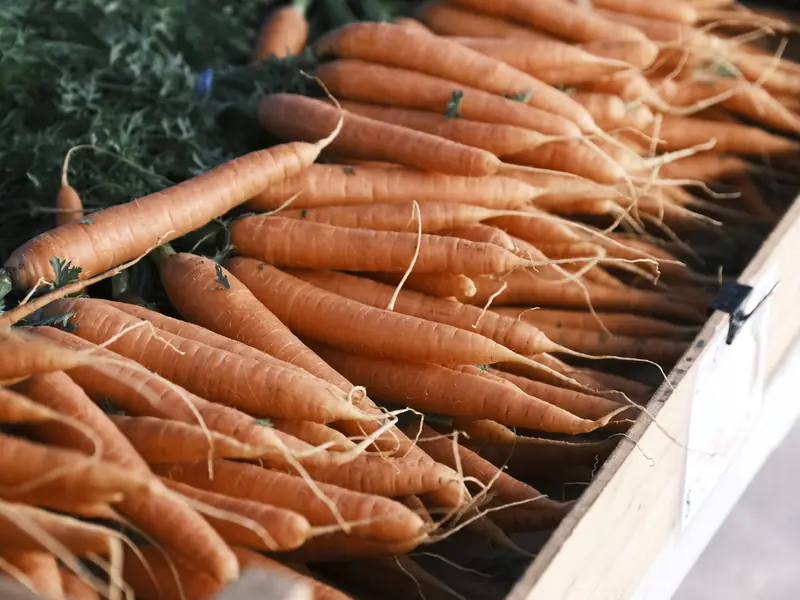
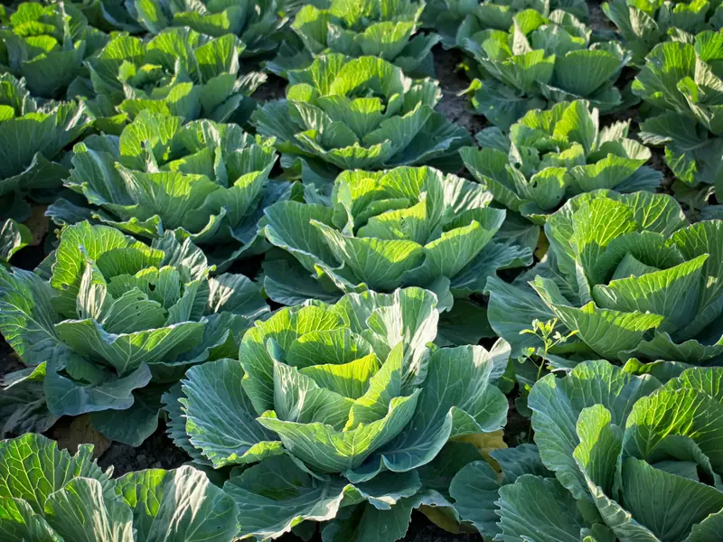
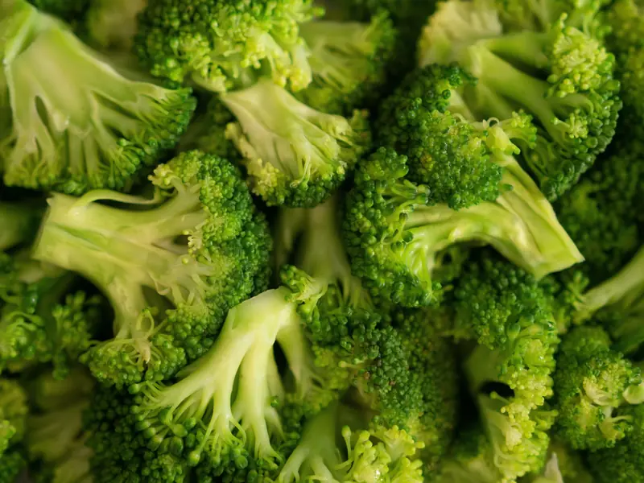
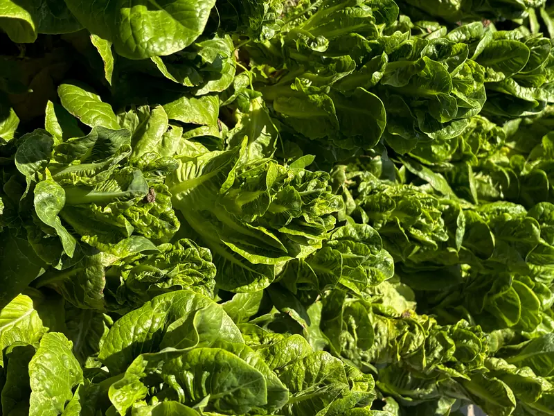
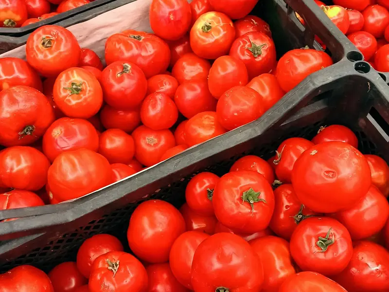
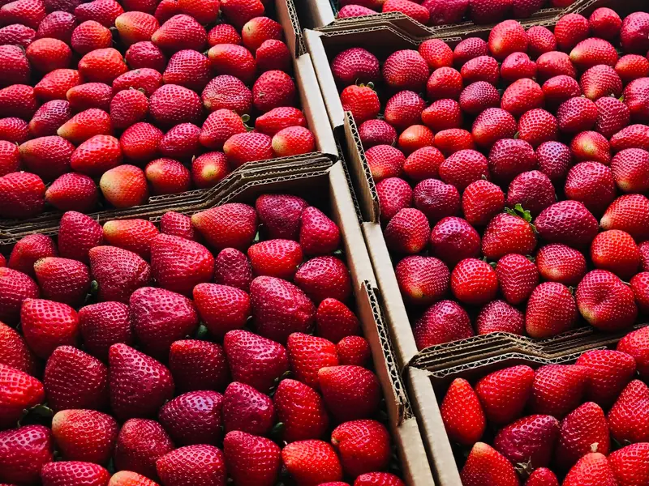
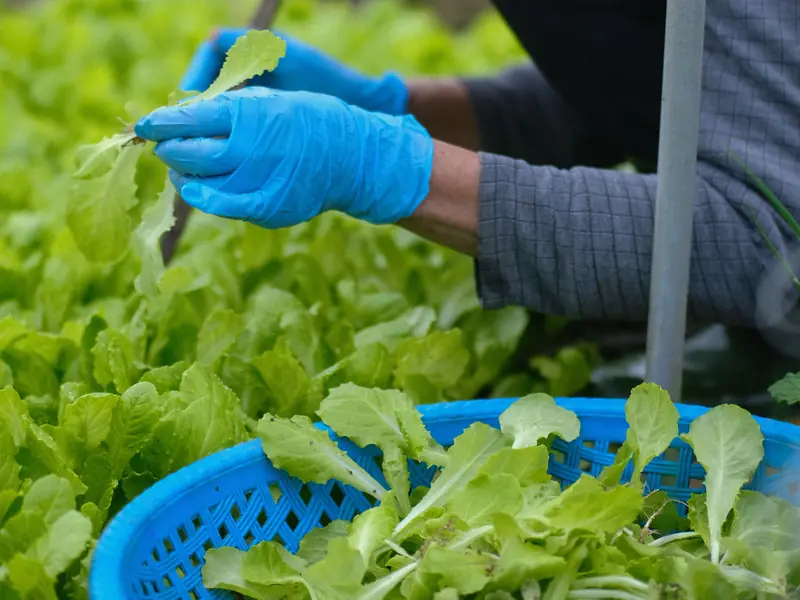
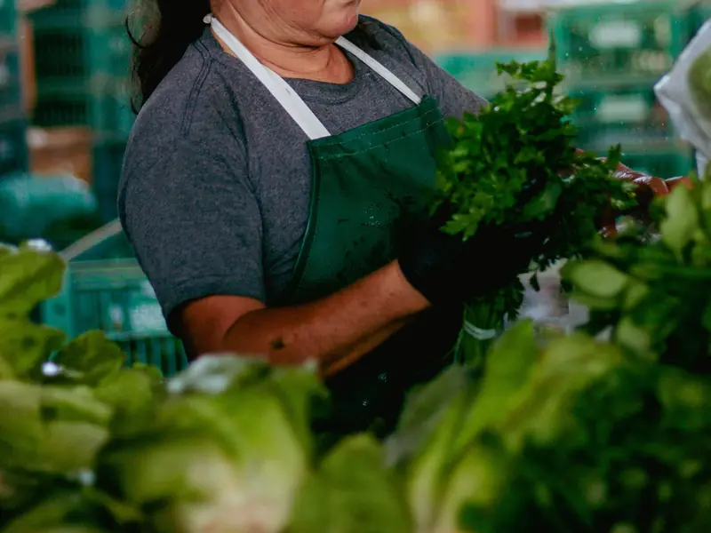
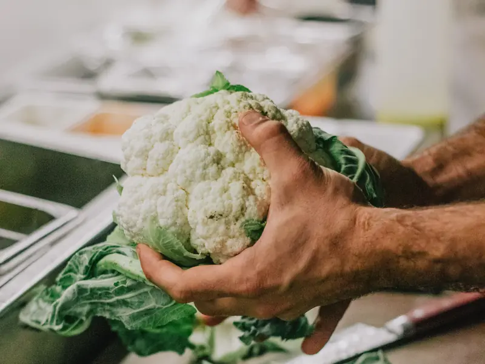

Kelompok tani sayur · Bedugul, Bali
Sayur dataran tinggi Bedugul, dipanen pagi dan tiba di dapur Anda di hari yang sama.
Kami memasok wortel, kubis, brokoli, selada, tomat, dan stroberi untuk hotel, restoran, dan kafe di Bali. Dikirim tiga kali seminggu, dengan jumlah dan mutu yang konsisten.
- Komoditas
- 6 jenis
- Pengiriman
- 3× seminggu
- Minimal pesanan
- 50 kg
Komoditas
Komoditas kami
Semua komoditas disortir per ukuran dan dikemas sesuai kebutuhan dapur. Kapasitas di bawah adalah jumlah yang sanggup kami kirim setiap minggu.
-

Wortel
Dicuci · grade A dan B
- Kemasan
- Karung 20 kg
- Kapasitas
- 800 kg / minggu
- Ketersediaan
- Sepanjang tahun
-

Kubis
Kepala padat · 1–2 kg per buah
- Kemasan
- Karung 25 kg
- Kapasitas
- 1 ton / minggu
- Ketersediaan
- Sepanjang tahun
-

Brokoli
Kuntum rapat · hijau tua
- Kemasan
- Krat 10 kg
- Kapasitas
- 300 kg / minggu
- Ketersediaan
- Sepanjang tahun
-

Selada
Romaine dan keriting
- Kemasan
- Krat 5 kg
- Kapasitas
- 200 kg / minggu
- Ketersediaan
- Sepanjang tahun
-

Tomat
Merah matang dan setengah matang
- Kemasan
- Krat 15 kg
- Kapasitas
- 400 kg / minggu
- Ketersediaan
- Sepanjang tahun
-
Musiman

Stroberi
Segar petik · ukuran sedang–besar
- Kemasan
- Box 1 kg
- Kapasitas
- 100 kg / minggu
- Ketersediaan
- Mei–September
Harga mengikuti musim panen. Tanyakan harga minggu ini dan ketersediaan stok lewat WhatsApp.
Tanya Harga Minggu IniSiap pasok
Siap memasok dapur Anda
Semua yang perlu diketahui bagian pembelian dan chef sebelum memesan secara rutin.
-
Jadwal kirim
Senin, Rabu, dan Jumat. Pesanan masuk paling lambat pukul 15.00 sehari sebelumnya.
-
Tiba di dapur
Dipanen pagi dan tiba sebelum pukul 14.00 di hari yang sama.
-
Area kirim
Denpasar, Badung (Kuta, Seminyak, Canggu, Nusa Dua), Ubud, dan Tabanan.
-
Minimal pesanan
50 kg per pengiriman, boleh campuran beberapa komoditas.
-
Pembayaran
Tunai atau transfer, dengan nota resmi di setiap pengiriman. Tempo 14 hari untuk pelanggan tetap.
-
Standar mutu
Disortir per ukuran dan kualitas, ditimbang ulang, lalu dikemas di krat bersih.
Dapur baru? Kami kirim sampel beberapa komoditas lebih dulu, supaya chef Anda bisa menilai sendiri sebelum berlangganan.
Minta PenawaranProses
Dari kebun ke dapur
Sayur yang segar bukan kebetulan. Inilah yang terjadi sejak dipetik sampai tiba di dapur Anda.
-

Panen pagi
Sayur dipetik antara pukul 05.00 dan 08.00, saat udara Bedugul masih sejuk, agar tetap renyah.
-

Sortir & kemas
Dipilah per ukuran dan kualitas, ditimbang, lalu dikemas di krat bersih sesuai pesanan.
-

Kirim ke dapur
Diantar dengan mobil bak tertutup dan tiba di dapur Anda di hari yang sama.
Tentang
Tentang kami
Tani Segar Bedugul adalah kelompok tani sayur di dataran tinggi Bedugul, Tabanan. Udara sejuk dan tanah vulkanis membuat sayur tumbuh renyah dan tahan lama.
Sejak 2015 kami menjual bersama, agar bisa memenuhi pesanan rutin hotel dan restoran dalam jumlah yang stabil.
- Bertani bersama sejak
- 2015
- Petani anggota
- 28
- Luas kebun
- ±12 ha
- Ketinggian kebun
- ±1.200 m
Janji kami kepada dapur Anda
-
Dipanen di hari kirim
Tidak ada sayur sisa kemarin di dalam krat Anda.
-
Berat sesuai nota
Yang ditagih sama dengan yang Anda terima. Silakan timbang ulang.
-
Diganti tanpa berdebat
Produk yang tidak sesuai standar kami ganti di pengiriman berikutnya.
-
Kabar lebih awal
Jika stok berkurang karena cuaca, kami beri tahu sebelum hari kirim, bukan saat mobil tiba.
Mulai berlangganan sayur segar
Kirim daftar kebutuhan dapur Anda lewat WhatsApp. Kami balas dengan harga minggu ini dan jadwal kirim terdekat.
Minta Penawaran via WhatsApp- Lokasi
- Kawasan Bedugul, Tabanan, Bali
- Jam pemesanan
- Setiap hari, 07.00–17.00
- Area kirim
- Denpasar, Badung, Ubud, Tabanan
Karena ini proyek konsep, tombol WhatsApp terhubung ke Anizra Studio.